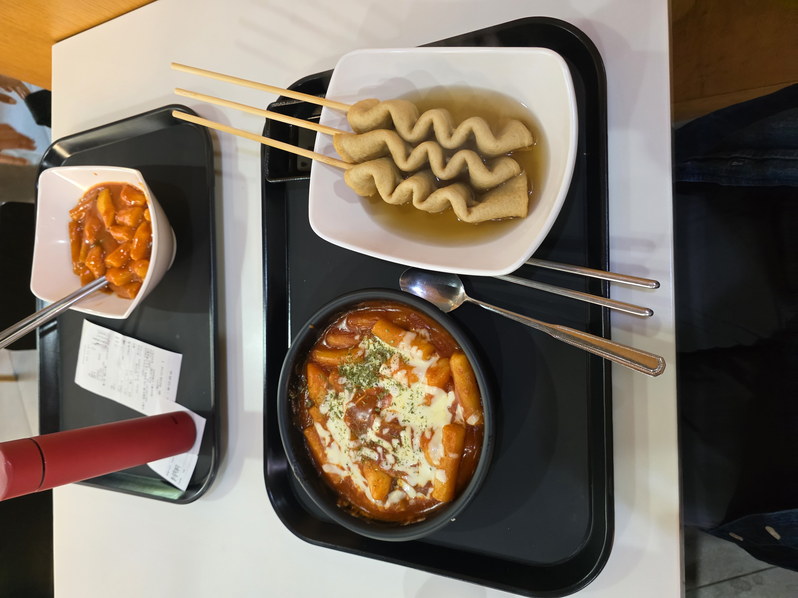

수요일은 떡볶이의 날
강의가 4개나 연달아 있는 수요일엔 50주년 기념관에서 감탄 떡볶이를 먹는것이 습관이 되었어요. 자극적이지 않고 쌀떡/밀떡 중에 선택할 수 있다는 장점때문에 좋아하게 되었습니다! 맛있게 먹고 난 후 강의실로 올라가면 (조금 졸리긴 하지만) 기분좋게 강의를 들을 수 있어요.
안녕하세요! 저의 생활들을 모은 블로그 입니다.
강의가 4개나 연달아 있는 수요일엔 50주년 기념관에서 감탄 떡볶이를 먹는것이 습관이 되었어요. 자극적이지 않고 쌀떡/밀떡 중에 선택할 수 있다는 장점때문에 좋아하게 되었습니다! 맛있게 먹고 난 후 강의실로 올라가면 (조금 졸리긴 하지만) 기분좋게 강의를 들을 수 있어요.
교내에 위치한 화랑초등학교에서 체육대회를 열었는지 학교 안에 솜사탕을 파는 아저씨께서 오셨어요. 수업 끝나고 냉큼 달려가 하나를 샀습니다! 예전엔 엄마가 먹지 말래서 못먹었던 기억이 있는데 이젠 원하는 만큼 먹을 수 있어서 기분이 좋았어요.